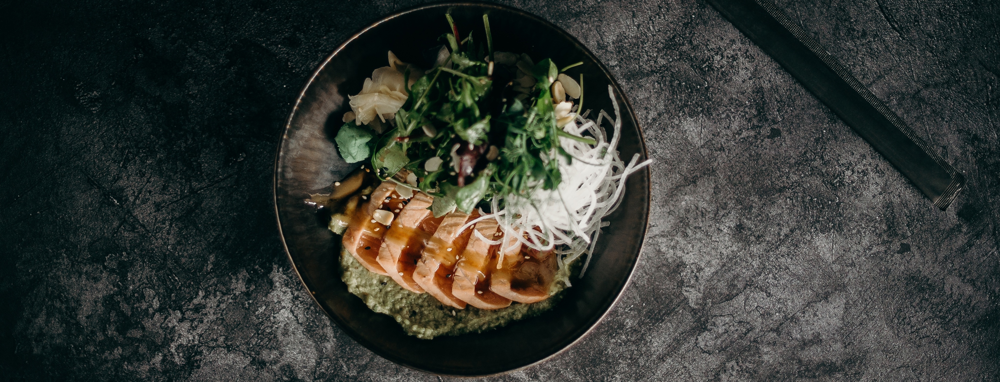
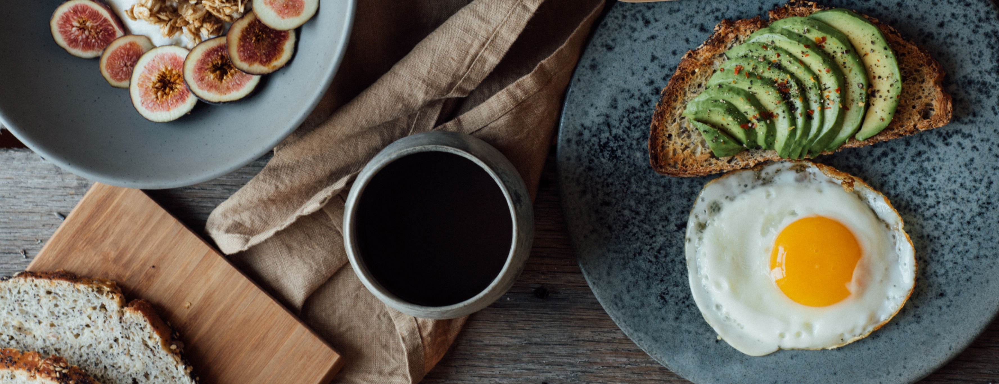

"Good food, Goodmood", surge a través de la idea de querer crear un sitio web donde todos los usuarios tengan la posibilidad de poder buscar recetas sanas, ricas y fáciles de preparar.
Además, dentro de este sitio todos podrán interactuar compartiendo sus propias recetas, o comentando y probando recetas de otros. De esta forma se creará una gran comunidad de usuarios apasionados por innovar recetas.
La chana masala es un plato típico de la cocina del norte de la India cuyo principal ingrediente es el garbanzo. Se trata de un plato muy especiado con un sabor cítrico bastante ácido.
Ver másEsta ensalada de coliflor asada es en realidad una obra de teatro. La combinación de coliflor asada, huevo escalfado y limón proporcionan el acompañamiento perfecto para que quede más suave y deliciosa.
Ver másLas gambas al ajillo, como se denominan en España, son un plato popular de la cocina española. Los ingredientes que constituyen este plato son gambas peladas, ajo y aceite de oliva.
Ver más.jpg)
No me gusta cocinar, pero encontré muchas recetas prácticas que me solucionan la vida. Muy recomendable.

Muy ricas cada una de estas recetas, las recomiendo mucho!